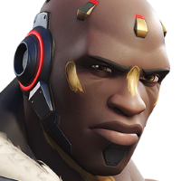
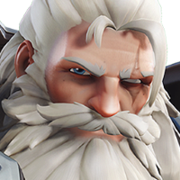

um experimento catastrófico lhe deu o poder de controlar a gravidade. Agora, a
Talon o manipula para seus próprios fins.

TANQUE
Os heróis com função de tanque resistem ao dano e destroem posições
fortificadas, como inimigos agrupados e pontos de obstrução. Quando você é um
tanque, é você quem lidera a investida.
|
A vida de Dr. Siebren de Kuiper, astrofísico brilhante, mudou para sempre quando um experimento catastrófico lhe deu o poder de controlar a gravidade. Agora, a Talon o manipula para seus próprios fins. |
|  | Doomfist é o líder calculista da Talon, uma organização terrorista e força paramilitar que trabalha em oposição direta à Overwatch. |
|  | Reinhardt Wilhelm se veste como um herói de eras passadas que vive pelos nobres códigos do valor, da justiça e da coragem. |